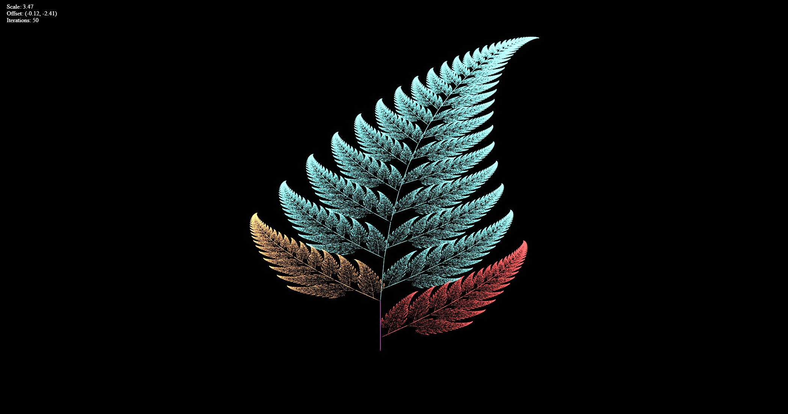
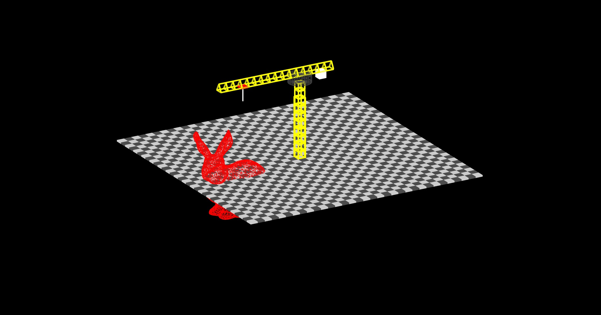
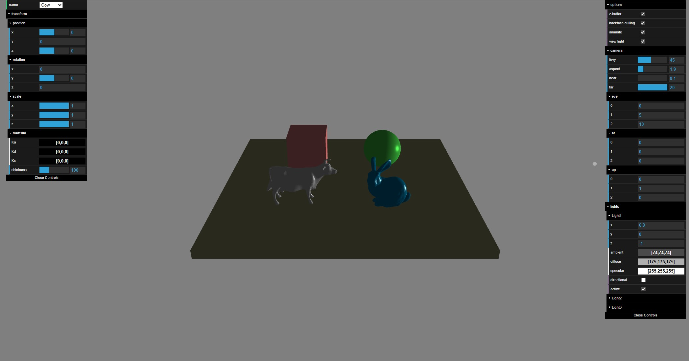

CGI Projects
Projects made for CGI (Computer Graphics and Interfaces).
Project 1

Overview & Features: The first project in ambit of CGI classes. This project consists of creating and selecting fractals using matrices and mathematical formulas. It is possible to zoom in and out of the image using scroll wheel and fractal selection is achevived using the number keys (1 - 9). Initial introduction to shaders, GL rendering, Javascript, HTML, CSS, basic vector and matrix transformation.
Project 2

Overview & Features: The second project is a simulated crane, with a functional rotating camera. Operating the crane is achieved using the WASD keys and the camera with the arrow keys. It is also possible to reset using R, change the color of the base using G and grab the bunny using Q. Continuation of matrices (pushes and pops) and GL rendering using models.
Project 3

Overview & Features: The third and final project. A flat plane with 4 different objects: a cow, sphere, bunny and cube. Controls with customization for all 4 objects and their positions in the simulated world. Camera angles, FOV, and camera positoning all modifiable with a menu. 3 existent light sources with an associated menu, to change their position, color and intensity. This final project was to combine all essential topics: viewpoints, rendering, lighting, object creation and modification, shaders and simple web development.
Tech Stack: Javascript